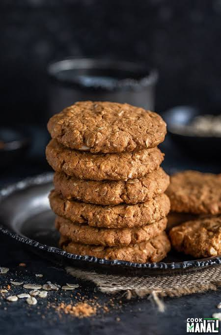

Ingredients
¾ cup Butter (softened)
¾ cup White Sugar
¾ cup Light Brown Sugar (packed)
2 Large Eggs
1 teaspoon Vanilla Extract
1 ¼ cups All-Purpose Flour
1 teaspoon Baking Soda
¾ teaspoon Ground Cinnamon
½ teaspoon Salt
2 ¾ cups Rolled Oats
1 cup Raisins
Directions
1. Preheat the oven to 375 degrees F (190 degrees C).
Line two cookie sheets with parchment paper or silicone liners
Read full directions